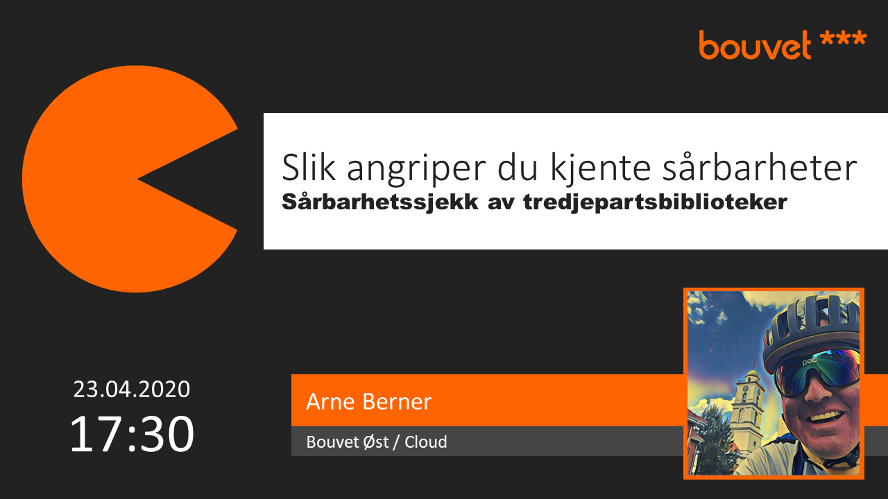
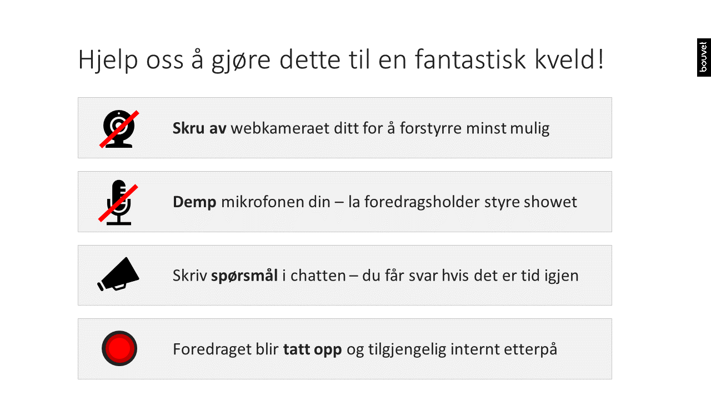
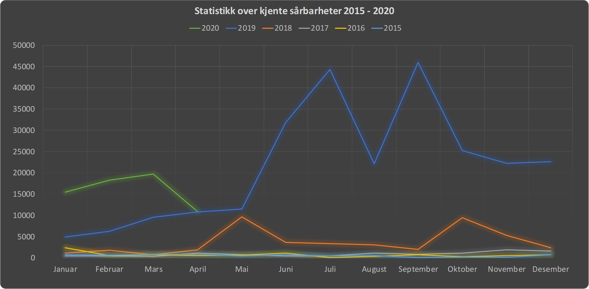
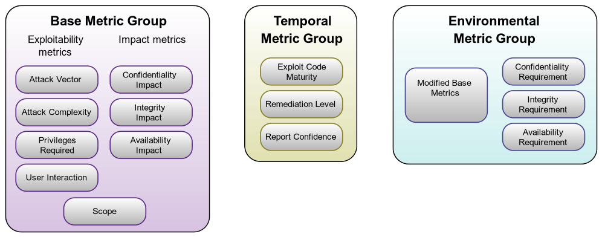

Sårbarhetssjekk av tredjepartsbiblioteker
Slik angriper du kjente sårbarheter
Du er sårbar!
... og sånn er det med din applikasjon også
Omfanget kjente sårbarheter øker

Før vi starter...
Hva er en kjent sårbarhet?
Hvor finner jeg informasjon om dem?
CVE & CVSS
CVE er listen over sårbarheter
Common Vulnerabilities and Exposures
CVSS er standarden vi bruker for å vurdere sårbarheter
Common Vulnerability Scoring System
Ressurser:
cve.mitre.org
www.first.org/cvss
nvd.nist.gov
Så la oss se på et eksempel
CVE-2020-8441
CVSS:3.1
/AV:N/AC:L/PR:N/UI:N/S:U/C:H/I:H/A:H
/E:P/RL:U/RC:R
/CR:H/IR:L/AR:L/MAV:A/MAC:H/MPR:L

Æsj, det var mye arbeid
Må det være slik?
Løsningen
Dropp sårbarhetsvurderingen
Oppgrader alle avhengigheter så fort du kan...
Steg 1: innsamlingen av sårbarhetsinformasjonen
Automatisk scan med bruk av:
Snyk (kommersielt)
OWASP Dependency-Check (open source)
WhiteSource Bolt (kommersielt)
Dependency Track (open source)
GitHub security alerts (dersom kildekoden ligger på GitHub)
Xray fra jfrog (kommersielt)
RetireJS (open source)
npm audit (open source)
Steg 2: Oppgrader alt som oppgraderes kan
Hold din avhengigheter oppdatert. Benytt muligheter for automatisk oppdatering.
Steg 3: manuell vurdering av sårbarheter
Dette steget må for all del unngåes
Oppsummering
Sårbarheter vurderes med CVSS standarden
https://www.first.org/cvss/calculator/
Din byggepipeline
skal
inneholde:
Automatisk sårbarhetsscan av avhengigheter
Forsøk på automatisk oppgradering
Unngå for all del manuell vurdering av kjente sårbarheter
Men må du:
så vet du nå hvordan!